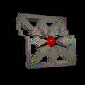

Back
About SheafScope
SheafScope's user interface is based on Java JDK 1.5. See the
usage documentation
for more detailed information about the various features of SheafScope.
Copyright © 2013 Limit Point Systems, Inc.
Back